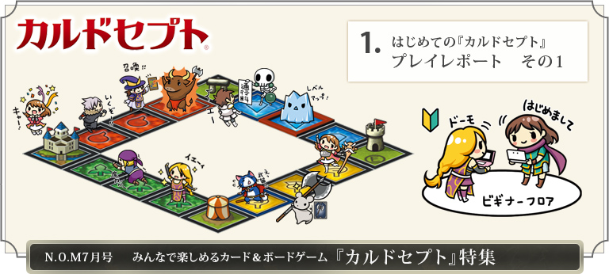
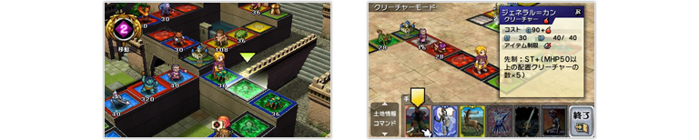
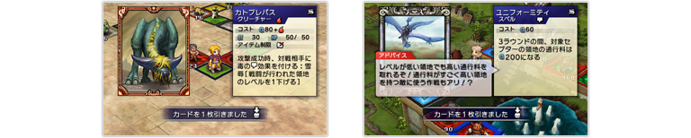
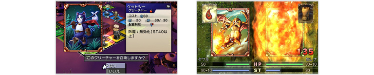
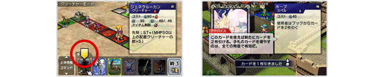
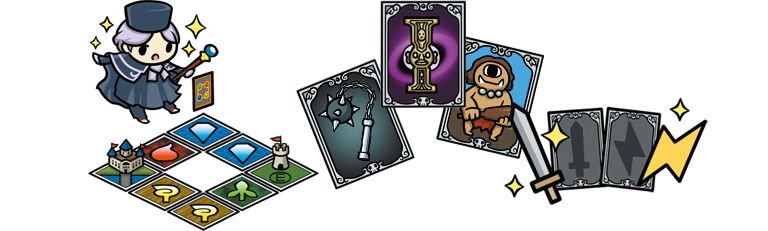

『カルドセプト』シリーズのいちばん基本となるルールは「すごろく」と同じです。コンピューターが操作するキャラクターも含めた数人で、サイコロを振って出た目の数だけマップ上のマス目を進み、ゴールを目指します。
単なる『すごろく』と異なるのは、自分のコマが止まったマス目を領地として占領できるところです。自分の領地にほかのプレイヤーが止まると、相手の「魔力」（お金のようなもの）を通行料としてもらうことができます。
単なる『すごろく』と異なるのは、自分のコマが止まったマス目を領地として占領できるところです。自分の領地にほかのプレイヤーが止まると、相手の「魔力」（お金のようなもの）を通行料としてもらうことができます。

このようにして、マップを周回しながら領地を増やしたり、プレイヤー間で領地を奪い合います。自分の総魔力が目標の数値に到達し、スタート地点に戻ればゴールです。
『モノポリー』や『いただきストリート』をプレイしたことがある方なら、それらと似たようなルールだなと感じるかもしれません。しかし『カルドセプト』には、さらにもうひとつ、大きな要素があります。
『モノポリー』や『いただきストリート』をプレイしたことがある方なら、それらと似たようなルールだなと感じるかもしれません。しかし『カルドセプト』には、さらにもうひとつ、大きな要素があります。
『カルドセプト』では、サイコロを振る前に自分の「ブック」（50枚のカードのセット）からランダムでカードを1枚引きます。このカードには、自分の代わりにバトルを行う「クリーチャー」と、バトル時に役立つ武器や防具などの「アイテム」、そしてさまざまな特殊効果が得られる「スペル」の3種類があります。

自分が止まったマス目を占領するには、この「クリーチャー」のカードを1枚使用します。また、すでにほかのプレイヤーの「クリーチャー」に占領されているマス目に止まってしまっても、カードを使ってバトルに勝てば通行料を支払う必要はなく、逆に自分の領地として占領できるのです。
このように『カルドセプト』は、カードゲームとボードゲームの2つの要素が合体したような、一粒で2度おいしいシステムになっています。基本となるルールはとてもシンプルですが、どのカードをいつどこで使うのか、人それぞれに個性を発揮して、実にさまざまな戦略を立てることが可能です。
このように『カルドセプト』は、カードゲームとボードゲームの2つの要素が合体したような、一粒で2度おいしいシステムになっています。基本となるルールはとてもシンプルですが、どのカードをいつどこで使うのか、人それぞれに個性を発揮して、実にさまざまな戦略を立てることが可能です。

『カルドセプト』をプレイしてみると、サイコロの運と、カードの戦略性があいまって、そのたびに新しい遊びかたを発見する面白さがあります。カードの種類は全部で480種類以上、マップの種類も非常に豊富で、とても奥深く飽きがこない、長く長く遊べるゲームなのです。
「『カルドセプト』の基本ルールは簡単」といっても、たくさんのカードの能力や効果を覚えたり、いろいろ考えることが多くて大変そうだ、と感じるかもしれません。しかし実際にプレイしてみると、まったくそんなことはありません。
筆者は『カルドセプト』をプレイするのは今回がはじめてで、予備知識もほとんどゼロでしたが、シングルプレイのストーリーモードをサクサクと進めることができました。杖の形をした「ゴリガン」というキャラクターが手取り足取り遊びかたを教えてくれるので、1〜2時間遊んだ頃には細かいルールもほとんど覚えてしまいます。
筆者は『カルドセプト』をプレイするのは今回がはじめてで、予備知識もほとんどゼロでしたが、シングルプレイのストーリーモードをサクサクと進めることができました。杖の形をした「ゴリガン」というキャラクターが手取り足取り遊びかたを教えてくれるので、1〜2時間遊んだ頃には細かいルールもほとんど覚えてしまいます。
また『カルドセプト』で行動を選ぶ際には、黄色い「アドバイスカーソル」が表示されます。とりあえずこのカーソルの指示に従って進めれば、初心者でも明らかに間違った行動を取ることは避けられるという仕組みです。
さらにカードを使用する際には、毎回「カードアドバイス」で使いかたのアドバイスを見ることができます。相手がどんなカードを引いたのかも「ドローポーズ」でゆっくり確認できるので、全カードの能力を覚えておく必要はないのです。
さらにカードを使用する際には、毎回「カードアドバイス」で使いかたのアドバイスを見ることができます。相手がどんなカードを引いたのかも「ドローポーズ」でゆっくり確認できるので、全カードの能力を覚えておく必要はないのです。

さて、サクサク進んだと書きましたが、これは決して相手のコンピューターが弱すぎて簡単だ、という意味ではありません。むしろ、どのマップでもハラハラドキドキさせられました。
そもそも『カルドセプト』には、サイコロの出目や、どのカードを引き当てるのかといった運の要素が大きくからみます。どんなに対戦相手に差をつけても、最後の最後まで一発逆転の可能性があるのです。その逆に、コンピューターにかなり差をつけられてからの大逆転というケースもありました。

どうやってチャンスをつかむのか。どうやって危機を乗り越えるのか。手持ちのカードを駆使して運の要素を乗り越える楽しさこそが、『カルドセプト』の醍醐味です。ストーリーモードでは、初心者でもその楽しさをしっかり味わうことができました。
難しすぎず、簡単すぎずの絶妙のゲームバランスで、筆者のように『カルドセプト』をプレイしたことがない方でも大丈夫です。プレイするほどに勝率も上がり、その面白さに開眼していくはずです。
難しすぎず、簡単すぎずの絶妙のゲームバランスで、筆者のように『カルドセプト』をプレイしたことがない方でも大丈夫です。プレイするほどに勝率も上がり、その面白さに開眼していくはずです。